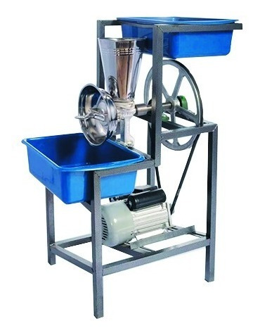

Molino

Un molino es una maquinaria de pulverización utilizado en la reducción del tamaño bajo 5-20 mm. Kefid (expresa agroindustria que ofrece diferente tipos de molinos) puede ofrecerles el molino más adecuado según sus diferentes métodos y aplicaciones.